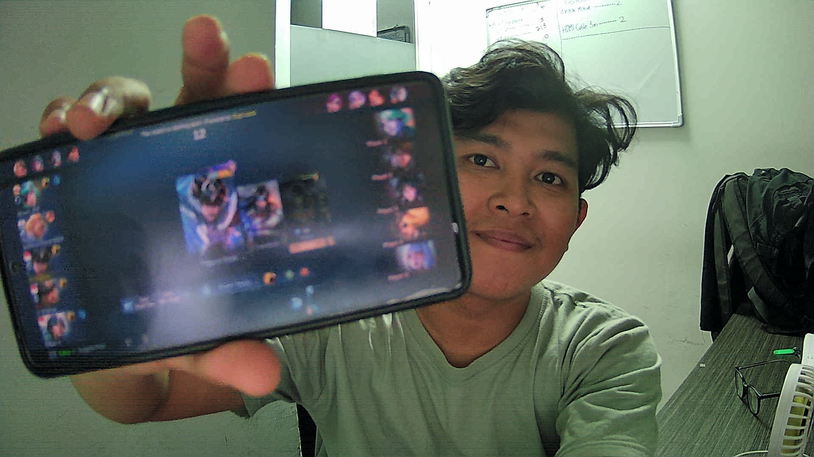

Halo!
Saya adalah pelajar yang tertarik dengan dunia teknologi dan sedang belajar membuat website menggunakan HTML dan CSS Modern.

Foto profil saya
About Me
Berikut adalah detail singkat mengenai diri saya.
Nama: Refdani Arfan Fairrhisa
Pendidikan: SMK
Pekerjaan: IT Support
Kontak: 081292980067
Hobi: Gaming
Alamat: Depok
Portofolio

Gambar 1

Gambar 2

Gambar 3